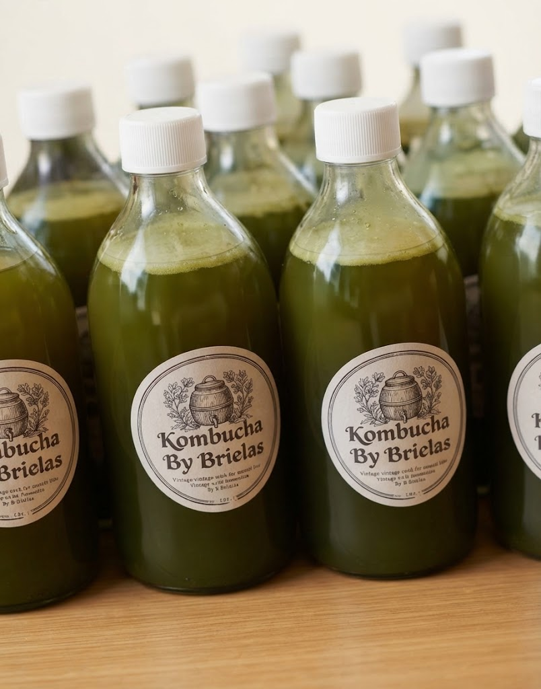
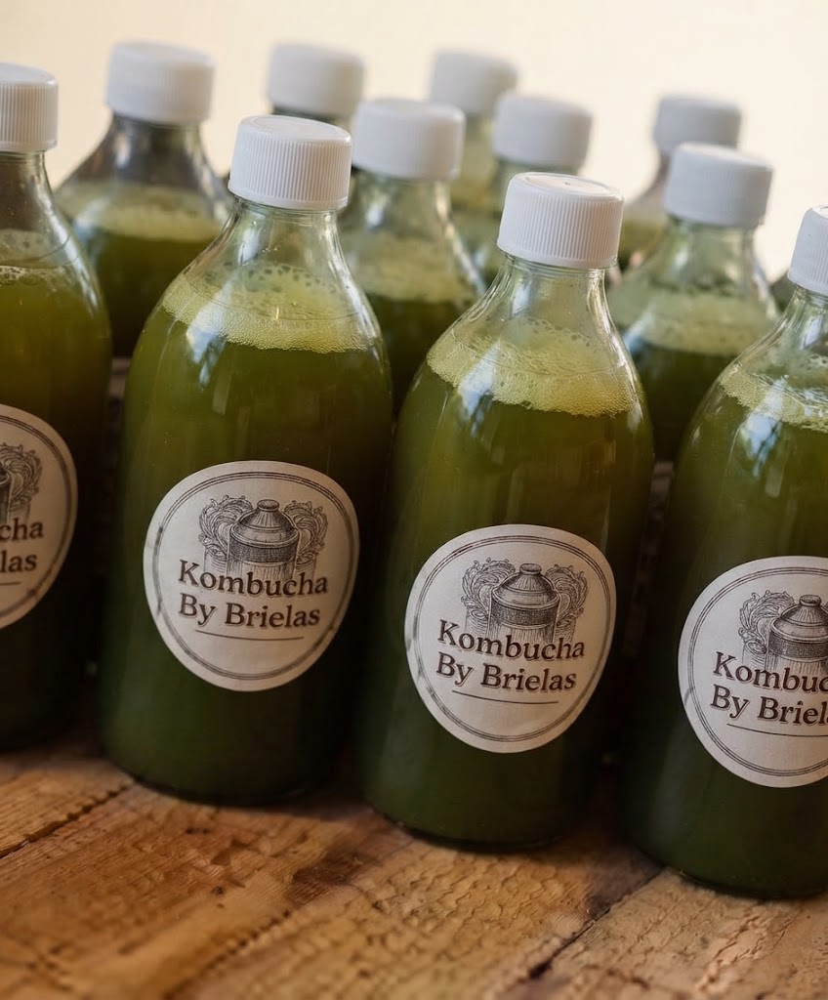

Nuestra historia
Hecha en casa,
Hecha en casa,
tanda por tanda
Kombucha by Brielas nace en una cocina hondureña, entre tandas de té endulzado, cultivos vivos y fruta del mercado del día. No hay línea de producción: hay ollas, botellas, etiquetas pegadas a mano y una prueba de sabor antes de cada entrega.
Cada tanda es pequeña a propósito. Es la única forma de que la fruta sea de verdad y de que cada botella salga como debe salir.

